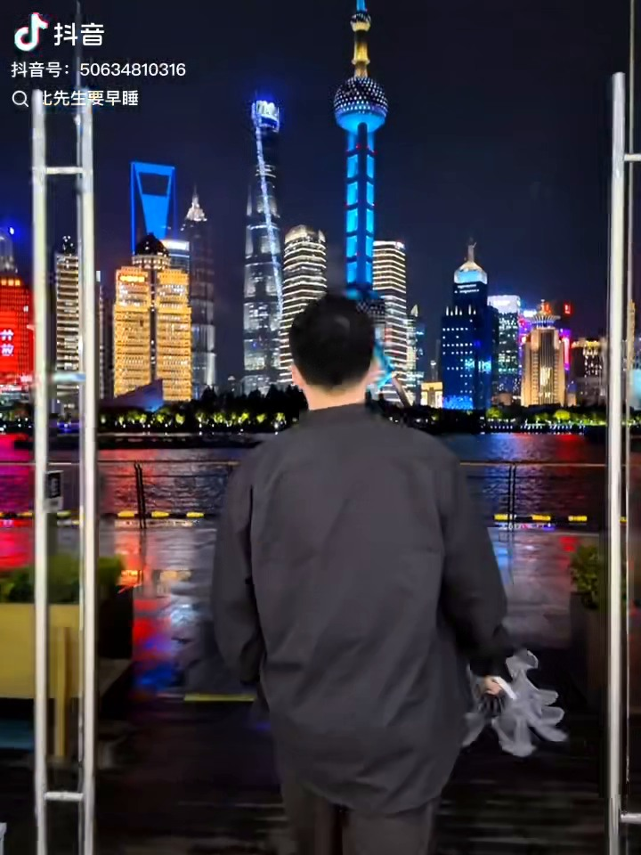
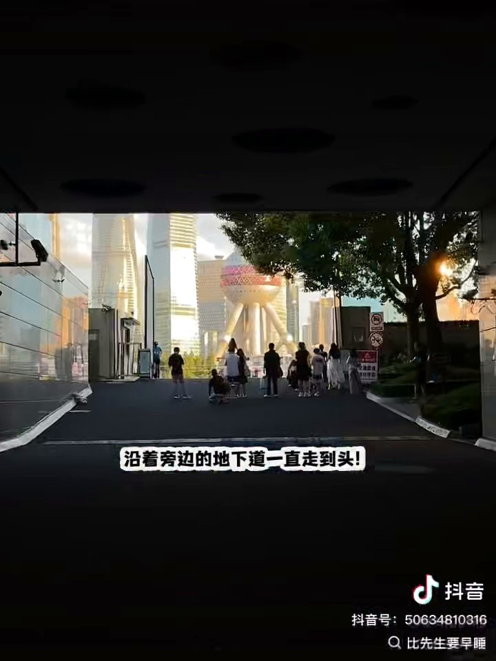
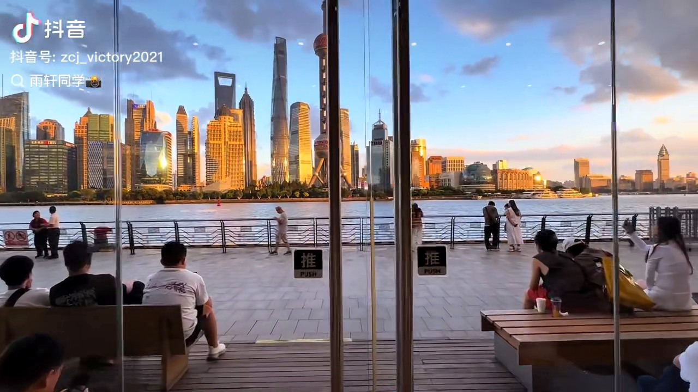
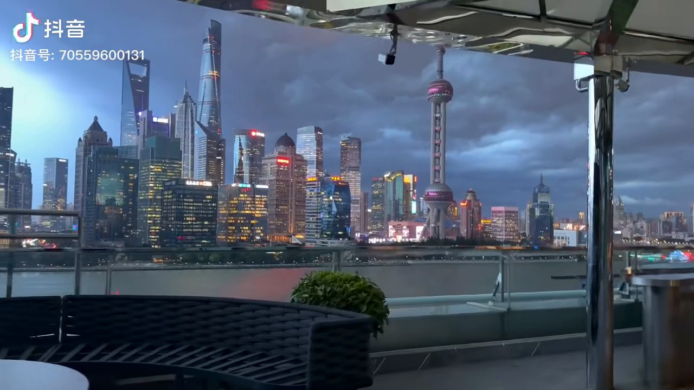
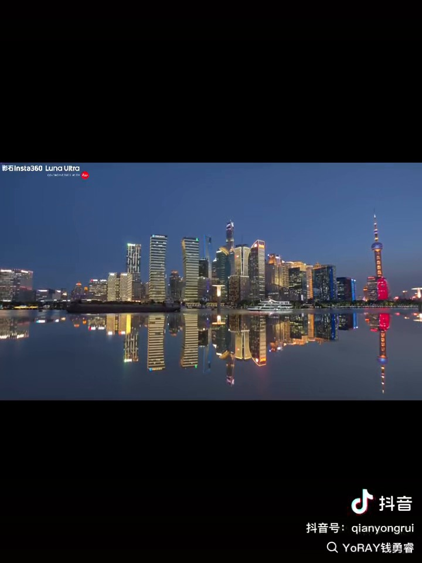

取自视频 f5e661… · 巨型东方明珠构图
STOP 01
国际港务大厦下沉通道
太平路入口进入，沿大厦旁的下沉坡道一直走到出口。
- 站位模特站在通道出口靠江一侧；摄影者退到斜坡较低处蹲拍，让通道形成天然画框。
- 镜头手机用2×或3×长焦压缩空间，东方明珠会显得更大；先拍竖构图。
- 参数点击人物脸部对焦，曝光略降约0.3档，保住东方明珠灯光细节。
- 避坑这里是通行区域，拍完一组就让开；不要站在车辆或工作人员通道中央。

把你四个视频里的地点串成一条不回头的步行线：下沉通道、MANNER玻璃门、二楼露台、公平路渡口倒影镜面。
示意图用于理解顺序，现场以地图步行导航与管控为准。
从陆家嘴过来，实时驾车不超过30分钟就打车；目的地输入“北外滩国客中心码头（太平路入口）”。
推荐保留下午版本，才能兼顾南京路、外滩和20:30的COLCA晚餐。
点击“复制导航词”，直接粘贴进地图软件。

太平路入口进入，沿大厦旁的下沉坡道一直走到出口。


太平路国际港务大厦南约60米，江边；门店三面玻璃正对陆家嘴。

与咖啡馆属于同一地点，但这是独立机位；按店内或外侧楼梯的现场指引前往二层。

导航到公平路渡口，面向江边寻找左侧观景平台和摄影点标识。
江边风大、国庆人多，轻装比携带太多设备更实用。两个人用手机就能完成全部机位。